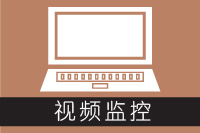

网站首页
关于我们
新闻中心
产品中心
服务中心
人才招聘
联系我们
办公自动化
该系统为企业信息一体化系统，不单是公司内部管理，也是涉及公司业务外部管理的一个综合平台。可以优化企业管理模式，提升企业管理效率，帮助防止形成“信息孤岛”，信息无法进行整合，造成业务流程脱节，更有效降低企业信息化管理成本。
点击详细内容
办公自动化
该系统为企业信息一体化系统，不单是公司内部管理，也是涉及公司业务外部管理的一个综合平台。可以优化企业管理模式，提升企业管理效率，帮助防止形成“信息孤岛”，信息无法进行整合，造成业务流程脱节，更有效降低企业信息化管理成本。
既然是一体化管理系统，就不再是单一的需要高薪聘请专业的财务管理或者人事管理专员，它聚集于多元化管理功能，除了一般的企业通常使用的进销存管理、财务管理及人事资源管理以外；还为企业开展其他业务奠定基础，开通具有独特的系统呼叫功能，拓展业务的客户关系管理功能，为企业节省资源而设置系统化的办公综合管理，为企业更个性化而设置的公司事务及个人事务管理。
该系统适用于中小微型各行各业的企业使用，简单易懂、无需专业专员操作。
此系统不仅可以通过PC登陆使用，也可以通过移动电话使用，这样可以随时随地、自由自在，不局限于办公室就可以轻松便捷进行漫游办公。
呼叫中心
电话呼入型呼叫中心的特点是接听顾客来电，为顾客提供一系列的服务 与支持，例如在IT行业中的技术支持中心，保险行业中的电话理赔中心等。 而电话呼出型呼叫中心一般说来，以从事市场营销和电话销售活动为主，是企业的利润中心。
点击详细内容
呼叫中心
电话呼入型呼叫中心的特点是接听顾客来电，为顾客提供一系列的服务 与支持，例如在IT行业中的技术支持中心，保险行业中的电话理赔中心等。 而电话呼出型呼叫中心一般说来，以从事市场营销和电话销售活动为主，是企业的利润中心。
面向组织的日常运作和管理，员工及管理者使用频率最高的应用系统，自1985年国内召开第一次办公自动化规划会议以来，OA在应用内容的深度与广度、IT技术
运用等方面都有了新的变化和发展，并成为组织不可缺的核心应用系统。面向组织的日常运作和管理，员工及管理者使用频率最高的应用系统，自1985年国内召开第一次办公自动化规划会议以来，OA在应用内容的深度与广度、IT技术 运用等方面都有了新的变化和发展，并成为组织不可缺的核心应用系统。
会员管理
会员管理是企业信息管理系统中不可忽略的业务。会员管理包括会员资格获得，资格会员管理，会员奖励 （体现在会员管理或者客户关系管理过程中）与优惠（体现在销售消费过程中），会员分析与保持。
点击详细内容
会员管理
会员管理是企业信息管理系统中不可忽略的业务。会员管理包括会员资格获得，资格会员管理，会员奖励 （体现在会员管理或者客户关系管理过程中）与优惠（体现在销售消费过程中），会员分析与保持
面向组织的日常运作和管理，员工及管理者使用频率最高的应用系统，自1985年国内召开第一次办公自动化规划会议以来，OA在应用内容的深度与广度、IT技术 运用等方面都有了新的变化和发展，并成为组织不可缺的核心应用系统。面向组织的日常运作和管理，员工及管理者使用频率最高的应用系统，自1985年国内召开第一次办公自动化规划会议以来，OA在应用内容的深度与广度、IT技术 运用等方面都有了新的变化和发展，并成为组织不可缺的核心应用系统。

视频监控
视频监控是安全防范系统的重要组成部分，英文Cameras and Surveillance。传统的监控系统包括前端摄像机、传输线缆、视频监控平台。
点击详细内容
视频监控
视频监控是安全防范系统的重要组成部分，英文Cameras and Surveillance。传统的监控系统包括前端摄像机、传输线缆、视频监控平台。
面向组织的日常运作和管理，员工及管理者使用频率最高的应用系统，自1985年国内召开第一次办公自动化规划会议以来，OA在应用内容的深度与广度、IT技术 运用等方面都有了新的变化和发展，并成为组织不可缺的核心应用系统。面向组织的日常运作和管理，员工及管理者使用频率最高的应用系统，自1985年国内召开第一次办公自动化规划会议以来，OA在应用内容的深度与广度、IT技术 运用等方面都有了新的变化和发展，并成为组织不可缺的核心应用系统。
进销存
本系统集采购、销售、库存管理为一体，提供对于企业经销商的管理、订单、采购、销售、退货、库存、往来发票、往来账 款等的管理，帮助企业处理日常的进销存业务。
点击详细内容
进销存
进销存管理系统，涵盖“销售管理、库存管理、统计查询、统计分析、经销商管理、进销帐务、参数管理”七大模块，它通 过采购（进）—>入库（存）—>销售（销）的动态管理过程，系统地解决企业账目混乱，库存不准，信息反馈不及时等问题。
本系统集采购、销售、库存管理为一体，提供对于企业经销商的管理、订单、采购、销售、退货、库存、往来发票、往来账 款等的管理，帮助企业处理日常的进销存业务，同时提供丰富的实时查询统计功能，能够帮助业务人员提高工作效率，帮助实 时全面掌握公司业务，做出及时准确的业务决策。
排班考勤
考勤系统是指一套管理公司的员工的上下班考勤记录等相关情况的管理系统。是考勤软件与考勤硬件结合的产品，一般为HR部门使用，掌握并管理企业的员工出勤动态。
点击详细内容
排班考勤
进销存管理系统，涵盖“销售管理、库存管理、统计查询、统计分析、经销商管理、进销帐务、参数管理”七大模块，它通 过采购（进）—>入库（存）—>销售（销）的动态管理过程，系统地解决企业账目混乱，库存不准，信息反馈不及时等问题。
本系统集采购、销售、库存管理为一体，提供对于企业经销商的管理、订单、采购、销售、退货、库存、往来发票、往来账 款等的管理，帮助企业处理日常的进销存业务，同时提供丰富的实时查询统计功能，能够帮助业务人员提高工作效率，帮助实 时全面掌握公司业务，做出及时准确的业务决策。
合作伙伴
|
网站地图
|
联系我们
|
法律声明
Copyright © time-time HuiHuang Corporation, All Rights Reserved 粤ICP备888888888号-8
合作伙伴